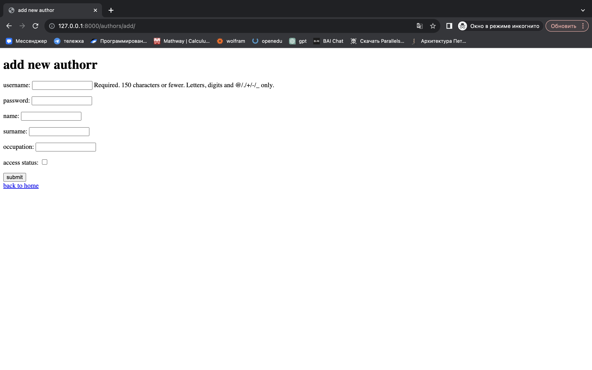
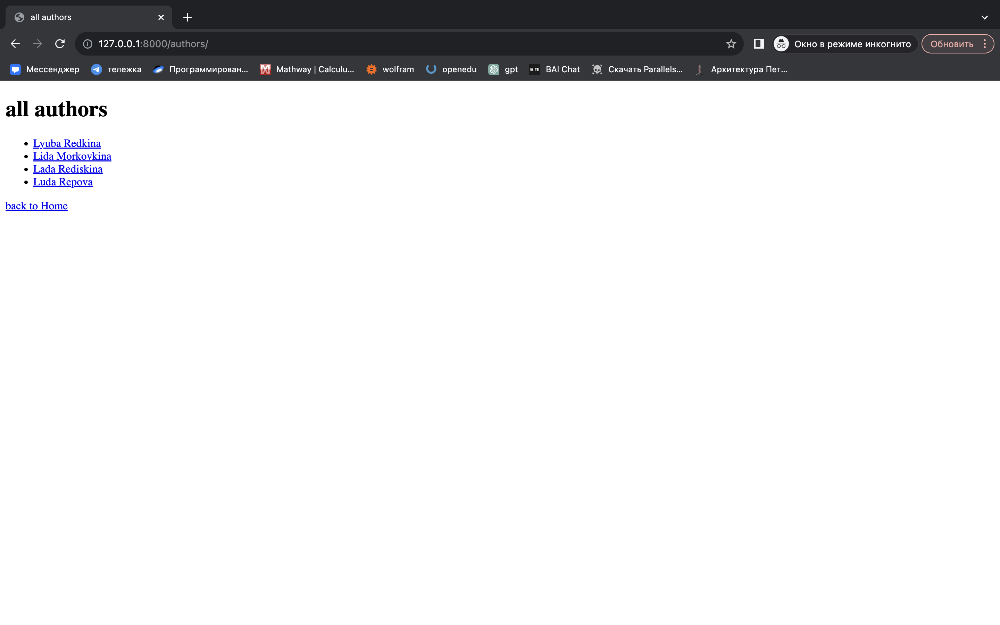
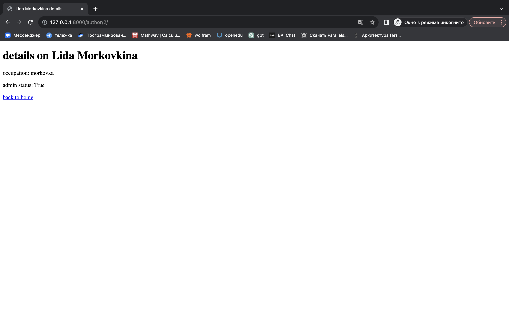
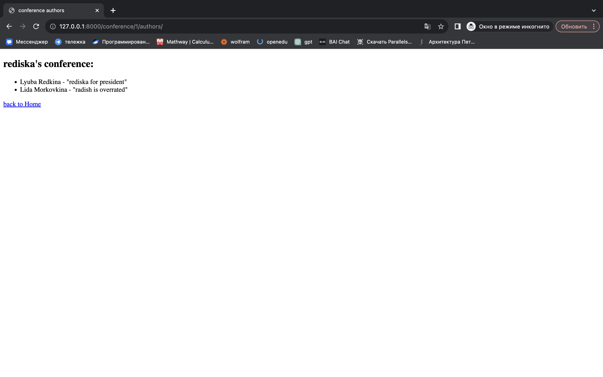

В проекте я использую множество html-страниц для представления информации о приложении на строне клиента. Для удобства я создала папку templates, где и храню все шаблоны.
В целом можно сказать, что все шаблоны делятся на:
-
шаблоны для добавления объекта
-
шаблоны для просмотра всех объектов в списке
-
шаблоны для просмотра объекта
-
шаблоны для редактирования объекта
Страницы для добавления объектов выглядят одинаково вне зависимости от того, какие модели я использую. Все странцы этого типа:
-
содержат форму для отправки данных методом POST на URL 'add_object'.
-
имеют поля формы в виде параграфов (обычно это инпуты и лейблы для полей модели).
-
кнопка для отправки формы
<button type="submit">submit</button>. -
предоставляют ссылку для возврата на главную страницу, используя URL
home.
<!DOCTYPE html>
<html>
<head>
<title>add new author</title>
</head>
<body>
<h1>add new author</h1>
<!-- Форма для добавления нового автора -->
<form method="post" action="{% url 'add_author' %}">
{% csrf_token %} <!-- CSRF-токен для безопасности формы -->
{{ form.as_p }} <!-- Вставка полей формы в виде параграфов -->
<button type="submit">submit</button> <!-- Кнопка для отправки формы -->
</form>
<!-- Ссылка для возврата на главную страницу -->
<a href="{% url 'home' %}">back to home</a>
</body>
</html>

Страницы группы all_objects отображают всех авторов в веб-приложении Django.
Они похожи тем, что:
-
содержат цикл типа
{% for object in objects %}для перебора всех объектов в списке. -
каждый объект представлен в виде элемента списка, где его аттрибут(-ы) являются гиперссылкой (
<a>), ведущей на страницу деталей об объекте ('object_detail'), используя идентификатор объекта (object.id). -
предоставляют ссылку
<a href="{% url 'home' %}">back to Home</a>для возврата на домашнюю страницу.
<!DOCTYPE html>
<html>
<head>
<title>all authors</title>
</head>
<body>
<h1>all authors</h1>
<!-- Список всех авторов -->
<ul>
{% for author in authors %}
<li><a href="{% url 'author_detail' author.id %}">{{ author.first_name }} {{ author.last_name }}</a></li>
{% endfor %}
</ul>
<!-- Ссылка для возврата на главную страницу -->
<a href="{% url 'home' %}">back to Home</a>
</body>
</html>

Страницы типа object_details отображают подробности об определенном объекте веб-приложения Django. Их объединяет то, что:
-
их заголовок, который отображается во вкладке браузера, использует аттрибуты объекта
<title>{{ author.first_name }} {{ author.last_name }} details</title>. -
они содержат параграфы (
<p>), отображающие различные атрибуты объекта. -
предоставляют ссылку
<a href="{% url 'home' %}">back to Home</a>для возврата на домашнюю страницу.
<!DOCTYPE html>
<html>
<head>
<title>{{ author.first_name }} {{ author.last_name }} details</title>
</head>
<body>
<h1>details on {{ author.first_name }} {{ author.last_name }}</h1>
<!-- Подробности об авторе -->
<p>occupation: {{ author.occupation }}</p>
<p>admin status: {{ author.is_admin }}</p>
<!-- Ссылка для возврата на главную страницу -->
<a href="{% url 'home' %}">back to home</a>
</body>
</html>

Страницы типа edit_object нужны для редатктирования информации об объекте.
Все страницы этого типа:
-
содержат форму для отправки данных методом POST на URL
edit_object. -
содержат кнопку
<button type="submit">submit</button>для отправки данных формы. -
предоставляют ссылку
<a href="{% url 'home' %}">back to Home</a>для возврата на домашнюю страницу.
<!DOCTYPE html>
<html>
<head>
<title>edit author</title>
</head>
<body>
<h1>edit author</h1>
<!-- Форма для редактирования данных об авторе -->
<form method="post" action="{% url 'edit_author' pk=author.pk %}">
{% csrf_token %}
<!-- Поля формы, автоматически сгенерированные на основе модели формы -->
{{ form.as_p }}
<!-- Кнопка для отправки данных формы -->
<button type="submit">submit</button>
</form>
<!-- Ссылка для возврата на главную страницу -->
<a href="{% url 'home' %}">back to home</a>
</body>
</html>

Также есть страница, не входящая ни в одну из категорий - она нужна для просмотра авторов по конференциям, как того требует задание.
Эта страница использует цикл {% for conference, authors_info in authors_by_conference.items %}: по словарю authors_by_conference, где conference - ключ (конференция), authors_info - значение (список авторов).
Кроме этого, страница содержит ненумерованный список <ul>: для отображения авторов, а также вложенный цикл {% for info in authors_info %}: для прохода по списку авторов .
Наконец, страница представляет каждого автора данной конференции как элемент списка с именем, фамилией и занимаемой должностью.
<li>{{ info.author.first_name }} {{ info.author.last_name }} - {{ info.title }}</li>:
И, разумеется, имеет ссылку для возврата на главную страницу, используя URL 'home'.
<!DOCTYPE html>
<html>
<head>
<title>conference authors</title>
</head>
<body>
<h1></h1>
<!-- Цикл по словарю authors_by_conference, где ключи - конференции, значения - списки авторов -->
{% for conference, authors_info in authors_by_conference.items %}
<h2>{{ conference.title }}:</h2>
<!-- Вложенный цикл для отображения списка авторов для текущей конференции -->
<ul>
{% for info in authors_info %}
<li>{{ info.author.first_name }} {{ info.author.last_name }} - {{ info.title }}</li>
{% endfor %}
</ul>
{% endfor %}
<!-- Ссылка для возврата на главную страницу -->
<a href="{% url 'home' %}">back to Home</a>
</body>
</html>
